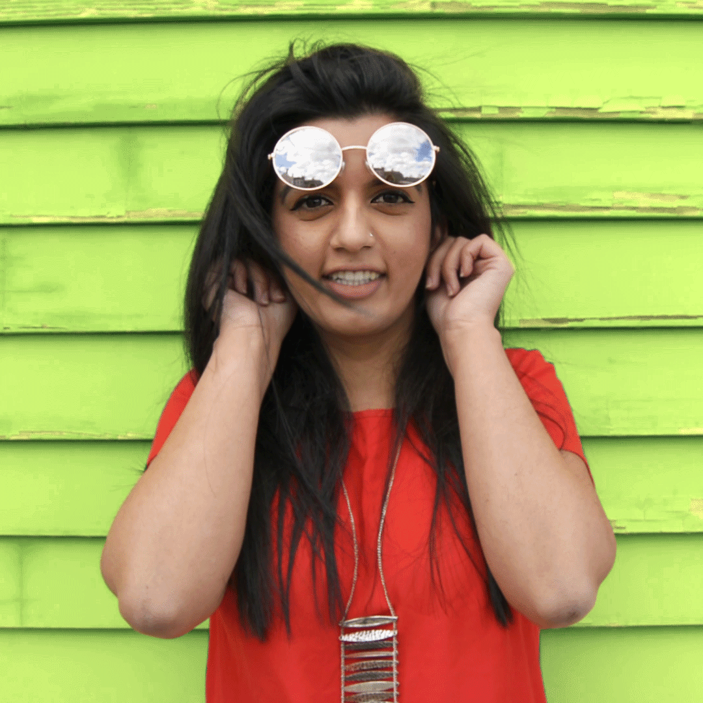
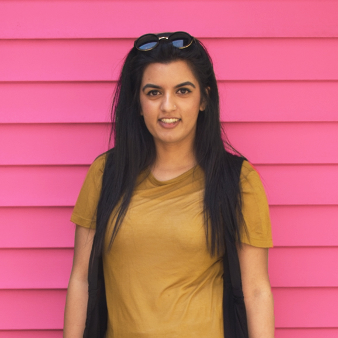
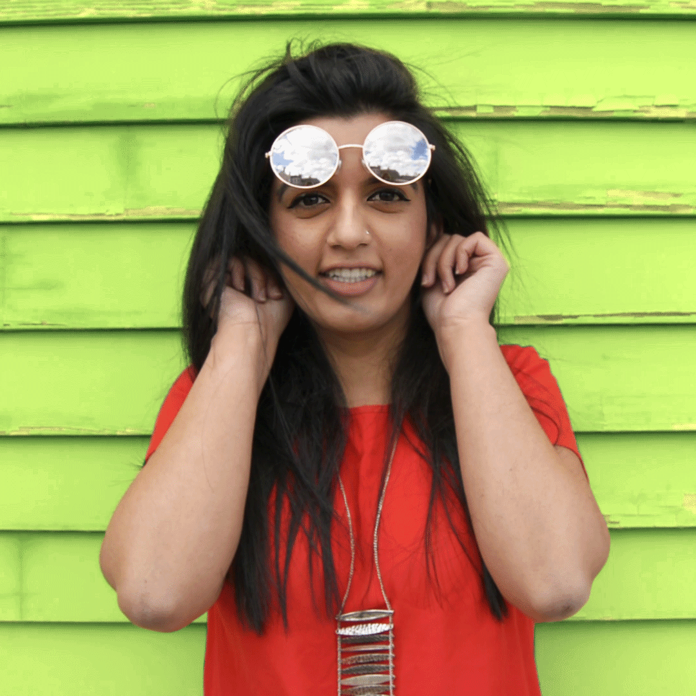
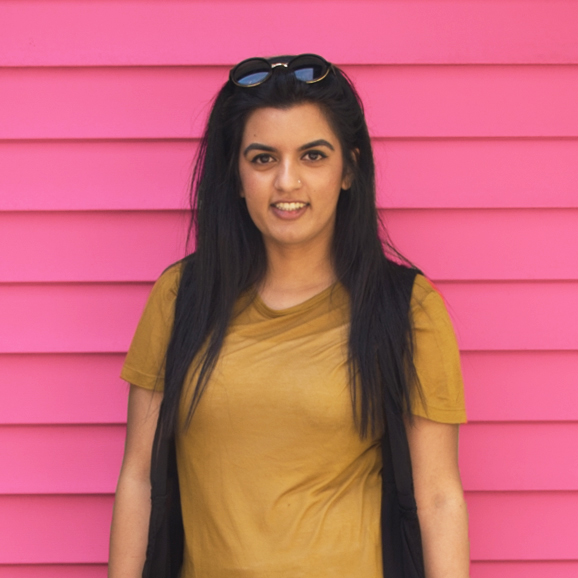

Nabila Hasan is a Digital Designer at Viacom Media Network. Previously she was a designer Bauer Publishing, the #1 seller of magazines at retail in the country. She was responsible for designing layouts for magazines such as InTouch, Life&Style, Closer, and others. Prior to joining Bauer Publishing, Nabila worked at Scholastic, Inc. as a Junior Graphic Designer. Nabila graduated from Western Connecticut State University with a bachelor's degree in Art. While in school, she interned at Viacom (Spike TV) and NBC Universal, and served as Vice President of Prisma. Outside of work, she has a passion for photography and videography, and aspires to leverage that passion in projects that challenge others to question their perspectives of how they see the world.